재현 가능한 파이프라인 증거 보고서
PerceptionISP Pipeline Showcase — nuScenes RGB → CameraE2E RAW
PerceptionISP는 센서 도메인 신호를 사람용 RGB 하나로만 축약하지 않고, HDR·노이즈·색·에지·광학·시간 신뢰도를 함께 산출하는 perception-oriented ISP입니다.
이 보고서의 모든 중간결과와 Aux map은 기존 캐시를 재사용하지 않고 nuScenes JPEG → CameraE2E sensor.volts pseudo-RAW → PerceptionISP 순서로 새로 계산되었습니다.
실행 요약
이 보고서에서 확인할 수 있는 것
같은 nuScenes 키프레임의 정적 AE bracket, 연속 6프레임의 stateful AE, 인접프레임 HDR 근사 stress와 같은-frame 대조군을 비교합니다. 모든 결과는 동일한 PerceptionISP가 생성한 RGB, 33개 Aux map, public-preview textual provenance를 가집니다.
해석 범위
- nuScenes inputs are processed auto-exposed JPEGs; source exposure, gain, WB, CFA and black/white levels remain unknown.
- CameraE2E is a forward recapture simulator, not an inverse ISP and cannot restore clipped source radiance.
- Adjacent-frame stacks are unregistered temporal HDR stress approximations, not simultaneous HDR brackets.
- Only the same-frame AE bracket is a simulated multi-exposure comparator; neither path is native sensor RAW.
- Aux confidence maps are model/heuristic diagnostics unless their required physical calibration is supplied.
중요한 해석
동일 장면 정적 bracket과 움직이는 인접프레임 근사를 비교하면 ghost disagreement, exposure-source 선택, HDR confidence의 의미를 볼 수 있습니다. temporal/flicker 계열에는 registration이 없으므로 motion·AE·JPEG 변화가 함께 섞입니다. 균일한 lens/MTF/PSF 기본 맵은 완벽한 광학이 아니라 실센서 calibration 부재를 뜻합니다.
파이프라인 결과
시나리오별 항목을 펼쳐 source JPEG와 주요 PerceptionISP RGB를 비교할 수 있습니다.
정적 AE bracket2 images

Temporal AE 6 frames24 images


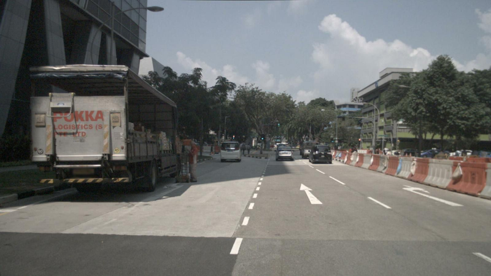

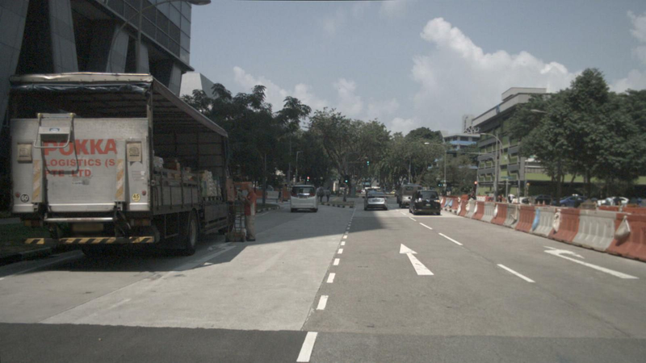

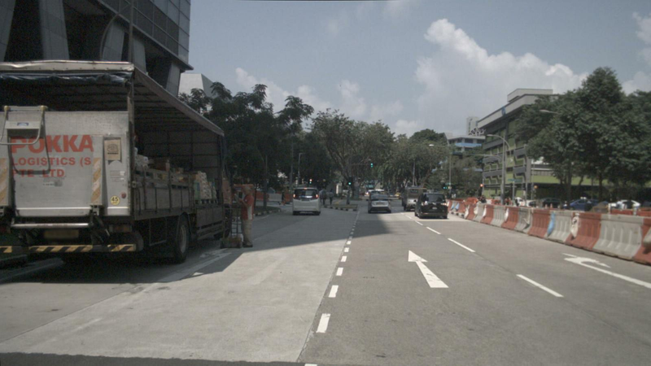
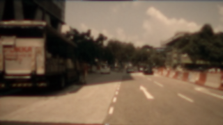

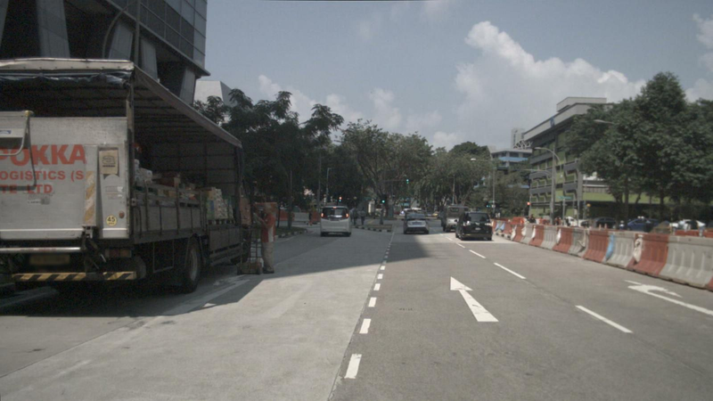
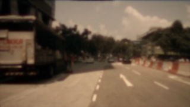

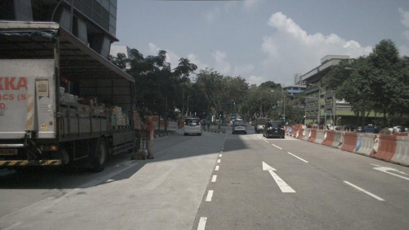


Inter-frame HDR stress와 정적 대조군38 images
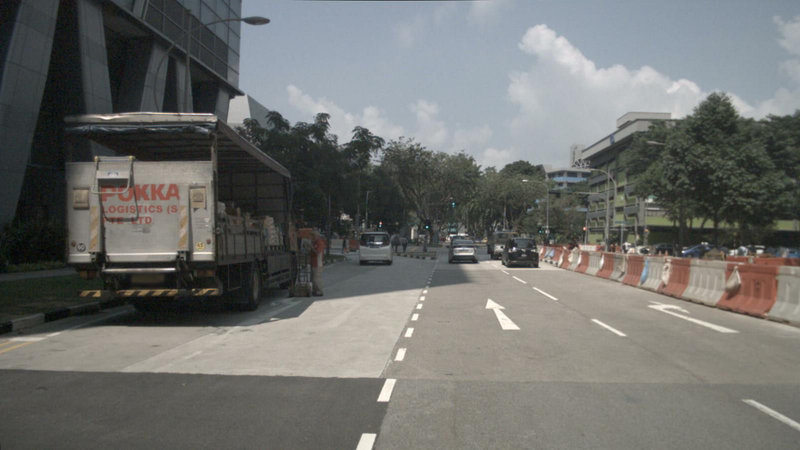
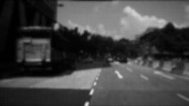
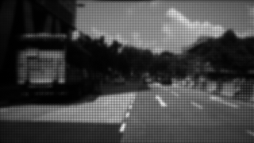


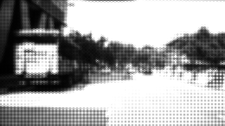
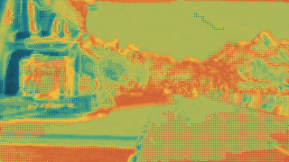
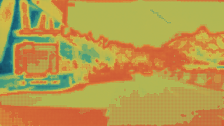
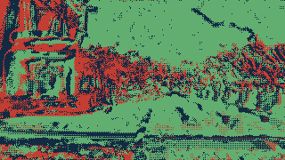

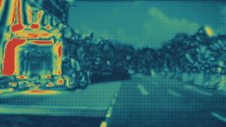


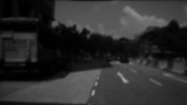


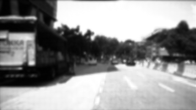
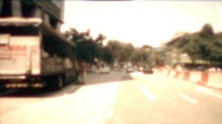
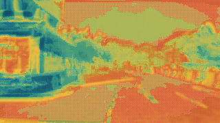
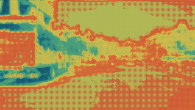
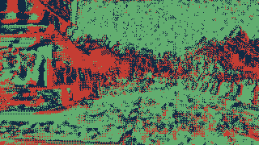


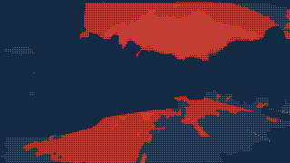
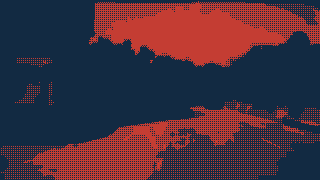
33개 Aux map 설계 설명
6개 기능군과 개별 map을 순서대로 펼쳐 보세요. “기대 효과”는 설계 의도이며 실제 task 성능 향상 수치가 아닙니다.
정규화·Calibration2 maps
lens_gainExpose spatial lens-shading compensation and its noise amplification context.
목적·선정 이유 Expose spatial lens-shading compensation and its noise amplification context.
기대 효과 Lets downstream gating distinguish center and vignetted regions when a calibrated gain map exists.
알고리즘 Nearest-resize the calibration lens_shading_gain map and multiply it into gain-corrected RAW.
값의 의미 Positive gain; 1 means neutral and values above 1 amplify signal and modeled noise.
적용 조건 Meaningful only with a sensor/lens calibration map.
한계 A uniform value of 1 is missing/neutral calibration, not proof of uniform optics.
raw_physical_normalization · PerceptionISPPipeline._raw_physical_normalizationdefect_confidenceMark pixels replaced from the defect table.
목적·선정 이유 Mark pixels replaced from the defect table.
기대 효과 Allows DNN and health logic to reduce trust in interpolated sensor samples.
알고리즘 Initialize ones and set calibrated defect coordinates to zero after local box-filter replacement.
값의 의미 [0,1]; 0 marks a corrected defect and 1 an unlisted pixel.
적용 조건 Requires an accurate defect-pixel table.
한계 An all-one map means no table entries were supplied, not that the sensor has no defects.
raw_physical_normalization · PerceptionISPPipeline._raw_physical_normalizationHDR·노출5 maps
hdr_exposure_sourceIdentify the exposure with the largest fusion weight at each pixel.
목적·선정 이유 Identify the exposure with the largest fusion weight at each pixel.
기대 효과 Makes exposure switching auditable and can condition highlight/shadow processing.
알고리즘 Argmax of SNR × non-saturation × low-signal × inter-plane-consistency weights; use the darkest fallback when every weight is zero.
값의 의미 Categorical exposure-plane index 0..E-1.
적용 조건 Useful for multi-exposure inputs; single exposure is uniformly index 0.
한계 It is the dominant contributor, not a hard statement that other planes were unused.
hdr_fusion · PerceptionISPPipeline._hdr_fusionsaturationLocate pixels saturated in any input exposure.
목적·선정 이유 Locate pixels saturated in any input exposure.
기대 효과 Supports highlight-risk gating and prevents saturated structure from receiving high edge confidence.
알고리즘 Threshold every normalized exposure and reduce with logical any across the exposure axis.
값의 의미 Binary [0,1]; 1 means at least one source plane crossed hdr_saturation_threshold.
적용 조건 Applies to single and multi-exposure RAW.
한계 It does not mean the fused HDR result is clipped; a shorter plane may still recover the pixel.
hdr_fusion · PerceptionISPPipeline._hdr_fusionclipping_distanceExpress remaining headroom below the saturation threshold.
목적·선정 이유 Express remaining headroom below the saturation threshold.
기대 효과 Provides a continuous highlight-risk signal beyond the binary saturation map.
알고리즘 Normalize threshold minus the maximum normalized exposure by the threshold and clip to [0,1].
값의 의미 [0,1]; 0 is at/above threshold and larger values have more headroom.
적용 조건 Applies to the configured pseudo-RAW scale.
한계 It is based on the brightest input plane, not fused-radiance headroom.
hdr_fusion · PerceptionISPPipeline._hdr_fusionhdr_confidenceSummarize usable HDR fusion support.
목적·선정 이유 Summarize usable HDR fusion support.
기대 효과 Allows output and DNN validity to fall where exposures are saturated, noisy, or inconsistent.
알고리즘 Sum nonnegative fusion weights and divide by exposure count, then clip to [0,1].
값의 의미 [0,1]; higher means stronger aggregate usable exposure support.
적용 조건 Applies to single and multi-exposure inputs.
한계 This is a heuristic confidence and is not calibrated probability or HDR quality ground truth.
hdr_fusion · PerceptionISPPipeline._hdr_fusionghost_motion_artifactExpose inter-plane radiance disagreement that can create ghosting.
목적·선정 이유 Expose inter-plane radiance disagreement that can create ghosting.
기대 효과 Can suppress unreliable HDR edges and reveal motion/flicker merge risk.
알고리즘 Compute per-pixel radiance standard deviation divided by mean absolute radiance, clipped to [0,1].
값의 의미 [0,1]; higher means greater normalized disagreement.
적용 조건 Informative only for two or more exposure planes.
한계 No registration or optical flow is used; motion, JPEG differences, AE errors, and noise are conflated.
hdr_fusion · PerceptionISPPipeline._hdr_fusionCFA·색·분광8 maps
lumaProvide a dense structural intensity channel close to the sensor domain.
목적·선정 이유 Provide a dense structural intensity channel close to the sensor domain.
기대 효과 Supports low-latency edge and temporal processing without waiting for display rendering.
알고리즘 For Bayer use the measured/interpolated green plane; clear, IR, and mono layouts use their decoder-specific intensity.
값의 의미 Nonnegative linear intensity on the fused pseudo-RAW scale.
적용 조건 Applicable to all supported CFA modes.
한계 Bayer green is a luma proxy, not colorimetric luminance.
cfa_decode · PerceptionISPPipeline._cfa_pixel_structure_decoderclear_channelExpose clear-pixel signal for clear-filter CFA layouts.
목적·선정 이유 Expose clear-pixel signal for clear-filter CFA layouts.
기대 효과 May improve low-light structure when genuine clear pixels and calibration are available.
알고리즘 Interpolate C samples for RCCB/RCCC/RCCG; use fused signal for mono; emit zeros for Bayer/RGB-IR.
값의 의미 Nonnegative linear clear signal; zero when the active CFA has no clear samples.
적용 조건 Only physically meaningful for native clear/mono CFA capture.
한계 CameraE2E Bayer and RGB proxy bridges do not create native clear measurements.
cfa_decode · _decode_clear_cfa/_decode_monochromeir_channelExpose interpolated infrared-pixel signal.
목적·선정 이유 Expose interpolated infrared-pixel signal.
기대 효과 Can let a model reason about IR illumination and visible-color contamination.
알고리즘 Interpolate IR samples in RGB-IR mode; emit zeros for Bayer, clear, and mono modes.
값의 의미 Nonnegative linear IR signal; zero when the CFA has no IR samples.
적용 조건 Only physically meaningful for native RGB-IR capture and crosstalk calibration.
한계 An RGB-derived CameraE2E proxy is not a native IR measurement.
cfa_decode · _decode_rgb_irdemosaic_confidenceEstimate reliability of reconstructed color samples.
목적·선정 이유 Estimate reliability of reconstructed color samples.
기대 효과 Supports artifact suppression and downweights uncertain color edges.
알고리즘 Combine CFA neighborhood support, horizontal/vertical gradient separation and local contrast, then mix with edge confidence and non-edge support.
값의 의미 [0,1]; higher indicates stronger reconstruction support.
적용 조건 Decoder-specific; valid as a relative diagnostic for supported CFA modes.
한계 Not calibrated against demosaic ground truth and partly depends on later edge confidence.
cfa_decode_edge · _decode_bayer_edge_aware/PerceptionISPPipeline._edge_structure_enginecolor_confidenceEstimate where color information is trustworthy.
목적·선정 이유 Estimate where color information is trustworthy.
기대 효과 Can reduce reliance on chroma under low SNR, saturation, poor HDR support, or strong global imbalance.
알고리즘 Multiply normalized SNR, non-saturation, global WB-balance confidence, and HDR confidence.
값의 의미 [0,1]; higher means stronger modeled color reliability.
적용 조건 Applicable to decoded RGB but depends on calibration quality.
한계 Global channel imbalance is only a WB heuristic and can penalize legitimately colored scenes.
color_spectral · PerceptionISPPipeline._color_spectral_enginelog_r_over_gRepresent red chromaticity relative to green.
목적·선정 이유 Represent red chromaticity relative to green.
기대 효과 Offers illumination/color cues with reduced dependence on overall brightness.
알고리즘 Compute safe log(R/G) after the camera color matrix.
값의 의미 Signed log ratio; 0 means R equals G.
적용 조건 Applicable when decoded camera RGB is meaningful.
한계 Sensitive to color matrix, demosaic error, clipping, and very small green values.
color_spectral · PerceptionISPPipeline._color_spectral_enginelog_b_over_gRepresent blue chromaticity relative to green.
목적·선정 이유 Represent blue chromaticity relative to green.
기대 효과 Offers illumination/color cues with reduced dependence on overall brightness.
알고리즘 Compute safe log(B/G) after the camera color matrix.
값의 의미 Signed log ratio; 0 means B equals G.
적용 조건 Applicable when decoded camera RGB is meaningful.
한계 Sensitive to color matrix, demosaic error, clipping, and very small green values.
color_spectral · PerceptionISPPipeline._color_spectral_engineir_contaminationEstimate the fraction of signal attributable to IR.
목적·선정 이유 Estimate the fraction of signal attributable to IR.
기대 효과 Can gate visible-color features where IR leakage is strong.
알고리즘 Compute IR divided by mean visible RGB plus IR.
값의 의미 [0,1]; higher means larger modeled IR contribution.
적용 조건 Only meaningful for genuine RGB-IR input.
한계 Uniform zero on Bayer is not evidence of an IR-free physical sensor.
color_spectral · PerceptionISPPipeline._color_spectral_engine노이즈·신뢰도3 maps
noise_varianceExpose modeled per-pixel uncertainty in the fused RAW signal.
목적·선정 이유 Expose modeled per-pixel uncertainty in the fused RAW signal.
기대 효과 Allows denoising, fast-path features, and DNN inputs to distinguish signal from noisy regions.
알고리즘 Sum shot, read, temperature/exposure dark-current, quantization, and calibration-residual variance; scale by lens_gain squared.
값의 의미 Positive modeled variance in normalized signal units squared.
적용 조건 Requires representative sensor-noise and calibration coefficients.
한계 CameraE2E bridge defaults are not a calibrated nuScenes camera noise model.
noise_uncertainty · PerceptionISPPipeline._noise_uncertainty_enginesnr_mapProvide bounded signal reliability.
목적·선정 이유 Provide bounded signal reliability.
기대 효과 Selected as the compact reliability channel in the stable RGB+Aux tensor and as a gate for edge/color confidence.
알고리즘 Compute signal/sqrt(variance), then map SNR to SNR/(SNR+1).
값의 의미 [0,1]; higher means stronger modeled signal relative to noise.
적용 조건 Relative validity follows the supplied noise model.
한계 It is not measured SNR and is optimistic or pessimistic when calibration coefficients are wrong.
noise_uncertainty · PerceptionISPPipeline._noise_uncertainty_enginenoise_normalized_gradientMeasure local intensity change relative to expected noise.
목적·선정 이유 Measure local intensity change relative to expected noise.
기대 효과 Helps distinguish structured transitions from noise-only gradients.
알고리즘 Divide luma gradient magnitude by sqrt(2 × modeled variance).
값의 의미 Nonnegative, unbounded standardized gradient-like score.
적용 조건 Useful when both luma and the noise model are meaningful.
한계 Large texture and demosaic artifacts can also produce high values.
noise_uncertainty · PerceptionISPPipeline._noise_uncertainty_engine에지·광학10 maps
edge_strengthRepresent local structural gradient magnitude.
목적·선정 이유 Represent local structural gradient magnitude.
기대 효과 Supports boundary-aware image formation, sparse EdgePackets, and DNN spatial features.
알고리즘 Build a noise-weighted luma/R-G/B-G structure tensor, take sqrt of the largest eigenvalue, and normalize by the frame maximum.
값의 의미 [0,1] frame-relative strength.
적용 조건 Applicable to all decoded inputs.
한계 Frame-max normalization prevents absolute comparison across unrelated runs without stored statistics.
edge_structure · PerceptionISPPipeline._edge_structure_engineedge_orientationExpose the dominant local edge direction.
목적·선정 이유 Expose the dominant local edge direction.
기대 효과 Can support orientation-aware filtering or geometric feature extraction.
알고리즘 Use half-angle atan2 of the structure-tensor off-diagonal and diagonal difference.
값의 의미 Cyclic radians in approximately [-pi/2, pi/2].
적용 조건 Meaningful where edge strength/confidence is sufficient.
한계 Orientation is unstable in flat, noisy, or isotropic texture regions.
edge_structure · PerceptionISPPipeline._edge_structure_engineedge_confidenceEstimate whether a detected edge is structurally and sensor-wise reliable.
목적·선정 이유 Estimate whether a detected edge is structurally and sensor-wise reliable.
기대 효과 Expected to suppress noisy, saturated, blurred, or isotropic edges while retaining supported boundaries.
알고리즘 Multiply structure-tensor anisotropy, MTF, exp(-0.5×PSF sigma squared), non-saturation, and SNR.
값의 의미 [0,1]; higher means stronger modeled edge reliability.
적용 조건 Depends on valid noise and optics calibration.
한계 A high value is not object-boundary probability or detector performance evidence.
edge_structure · PerceptionISPPipeline._edge_structure_engineedge_evidenceCombine edge magnitude and reliability into one compact feature.
목적·선정 이유 Combine edge magnitude and reliability into one compact feature.
기대 효과 Selected for DNN/proposal experiments where strength alone admits noise and confidence alone can be weak at strong boundaries.
알고리즘 Robust-normalize strength and confidence with p1/p99 ranges and take their geometric mean.
값의 의미 [0,1] frame-relative combined evidence.
적용 조건 Applicable to decoded inputs with meaningful edge maps.
한계 Percentile normalization makes values run-relative rather than calibrated probabilities.
edge_structure · _combined_edge_evidenceedge_typeSeparate luminance and chromatic edge evidence.
목적·선정 이유 Separate luminance and chromatic edge evidence.
기대 효과 Can distinguish intensity boundaries from color-only transitions and demosaic-sensitive locations.
알고리즘 Normalize luma and maximum chroma gradient by frame maxima and classify at threshold 0.12 as none/luma/chroma/both.
값의 의미 Categorical: 0 none, 1 luma, 2 chroma, 3 both.
적용 조건 Applicable when decoded chroma differences are meaningful.
한계 Fixed frame-relative thresholds are diagnostic and not universally calibrated.
edge_structure · PerceptionISPPipeline._edge_structure_engineblur_focus_confidenceSummarize local focus support from strong reliable edges.
목적·선정 이유 Summarize local focus support from strong reliable edges.
기대 효과 Can flag regions where detail-sensitive downstream features should be downweighted.
알고리즘 Average edge confidence with edge strength normalized by the configured high-percentile strength threshold.
값의 의미 [0,1]; higher means stronger local focus-like support.
적용 조건 Relative within a frame and most meaningful around edges.
한계 Texture scarcity, motion blur, defocus, and low contrast are not separated.
edge_structure · _blur_focus_confidencemtf_confidenceCarry calibrated spatial MTF reliability into edge processing.
목적·선정 이유 Carry calibrated spatial MTF reliability into edge processing.
기대 효과 Allows known lens/sensor resolution loss to reduce edge confidence.
알고리즘 Nearest-resize calibration.mtf_confidence_map, defaulting to one.
값의 의미 Normally [0,1]; one means no attenuation in the model.
적용 조건 Meaningful only with measured/calibrated MTF data.
한계 Uniform one is a neutral default, not measured perfect MTF.
edge_structure · PerceptionISPPipeline._edge_structure_enginepsf_sigmaExpose calibrated local PSF blur scale.
목적·선정 이유 Expose calibrated local PSF blur scale.
기대 효과 Lets downstream logic reason about spatially varying optical blur.
알고리즘 Nearest-resize calibration.psf_sigma_map and clamp to nonnegative values.
값의 의미 Nonnegative sigma in calibration-defined sensor-pixel units.
적용 조건 Meaningful only with calibrated PSF data.
한계 Zero is the default when no PSF map is supplied and is not a measured diffraction-free result.
edge_structure · PerceptionISPPipeline._edge_structure_enginepsf_blur_confidenceConvert PSF width into a bounded sharpness prior.
목적·선정 이유 Convert PSF width into a bounded sharpness prior.
기대 효과 Expected to reduce trust in edges where calibrated blur is large.
알고리즘 Compute exp(-0.5 × psf_sigma squared).
값의 의미 [0,1]; 1 at sigma 0 and decreasing with blur scale.
적용 조건 Depends entirely on PSF calibration.
한계 A uniform one usually reflects missing/default PSF calibration.
edge_structure · _psf_blur_confidencepsf_edge_likelihoodPrefer reliable edges that are not explained by HDR disagreement.
목적·선정 이유 Prefer reliable edges that are not explained by HDR disagreement.
기대 효과 Selected as a compact edge/optics cue for DNN experiments under blur and multi-exposure stress.
알고리즘 Subtract ghost_motion_artifact from edge_confidence and clip to [0,1].
값의 의미 [0,1]; higher means confident edge with low inter-plane disagreement.
적용 조건 Useful as a diagnostic fusion of edge and HDR consistency.
한계 It is not a fitted PSF likelihood despite the historical name.
edge_structure · PerceptionISPPipeline._edge_structure_engineTiming·Temporal5 maps
rolling_row_fractionExpose normalized sensor-row readout position.
목적·선정 이유 Expose normalized sensor-row readout position.
기대 효과 Allows models or diagnostics to condition on rolling-readout timing.
알고리즘 Generate a linear 0..1 vector over rows and reverse it for bottom-to-top readout.
값의 의미 One-dimensional [0,1] row coordinate.
적용 조건 Requires correct readout direction; row timestamps are available in Trace.
한계 No rolling-shutter geometric compensation is performed.
optics_geometry_timing · PerceptionISPPipeline._optics_geometry_timing_enginetemporal_differenceExpose change from the previous processed frame.
목적·선정 이유 Expose change from the previous processed frame.
기대 효과 Supports low-latency motion/change awareness and frozen-frame diagnostics.
알고리즘 Absolute difference between current linear perception luma and PreviousFrameState luma; zero without compatible state.
값의 의미 Nonnegative linear intensity difference.
적용 조건 Requires correctly chained same-camera PreviousFrameState.
한계 No motion compensation; ego/object motion, AE, JPEG artifacts, and flicker are mixed.
temporal_flicker · PerceptionISPPipeline._led_flicker_temporal_enginetemporal_consistencyConvert frame change into bounded stability.
목적·선정 이유 Convert frame change into bounded stability.
기대 효과 Allows downstream paths to downweight temporally unstable regions.
알고리즘 Compute exp(-temporal_difference / temporal_flicker_threshold).
값의 의미 [0,1]; 1 is unchanged and lower values indicate larger change.
적용 조건 Requires compatible previous-frame state.
한계 It measures photometric consistency, not correspondence or optical flow confidence.
temporal_flicker · PerceptionISPPipeline._led_flicker_temporal_engineled_flicker_confidenceHighlight bright temporally unstable or HDR-disagreeing regions.
목적·선정 이유 Highlight bright temporally unstable or HDR-disagreeing regions.
기대 효과 Intended to expose LED/flicker risk to runtime control and downstream gating.
알고리즘 Combine (1-temporal_consistency) × bright-light gate with HDR disagreement × saturation, then clip.
값의 의미 [0,1]; higher means stronger flicker-like evidence.
적용 조건 Most informative for bright light sources in a chained sequence or multi-exposure input.
한계 Not an LED classifier; motion, exposure change, and compression can raise it.
temporal_flicker · PerceptionISPPipeline._led_flicker_temporal_enginelight_source_confidenceRepresent bright light-source-like regions with a flicker penalty.
목적·선정 이유 Represent bright light-source-like regions with a flicker penalty.
기대 효과 Can help distinguish stable lights from unstable highlights.
알고리즘 Map luma above 0.65 into a 0..1 bright gate and multiply by 1-0.5×flicker.
값의 의미 [0,1]; higher means bright and relatively stable.
적용 조건 Diagnostic for the configured linear intensity scale.
한계 Brightness alone cannot distinguish lamps, reflections, sky, or saturated surfaces.
temporal_flicker · PerceptionISPPipeline._led_flicker_temporal_engine전체 Aux map 갤러리
11개 실행 결과별로 33개 map을 나눴습니다. 필요한 결과만 펼치면 363개 이미지를 한꺼번에 스크롤하지 않아도 됩니다.
static_ae_bracket/result_00033 maps
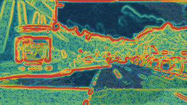

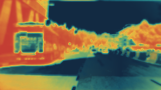

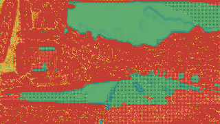
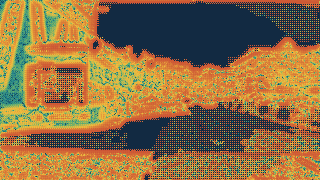
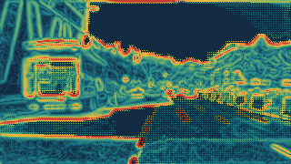
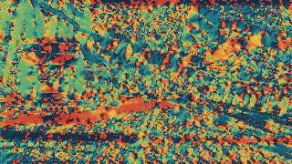
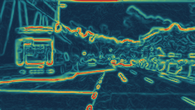
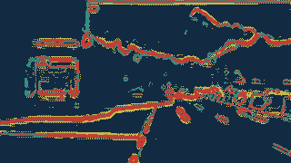
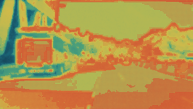
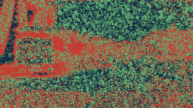


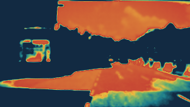
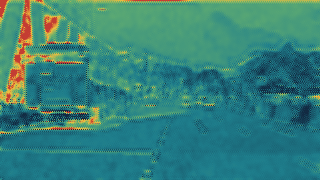
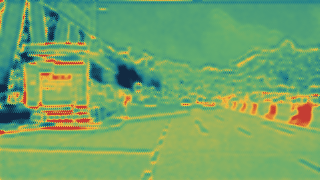

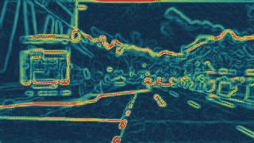

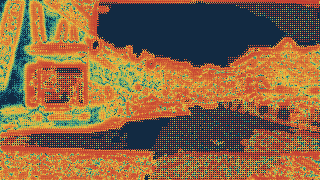


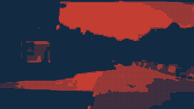
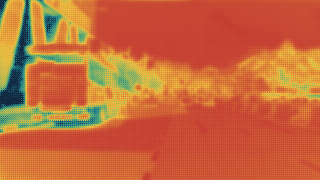


temporal/frame_00033 maps
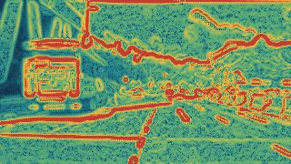

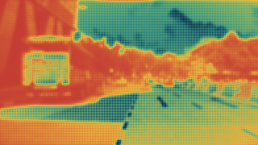
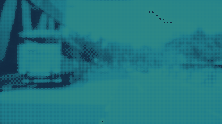

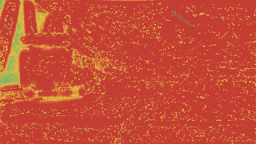
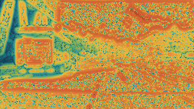
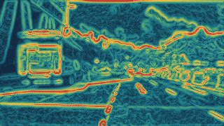
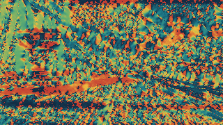
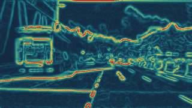
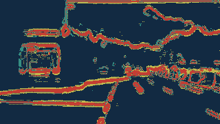

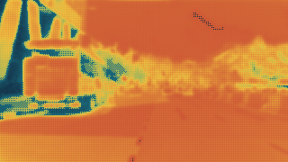


temporal/frame_00133 maps


temporal/frame_00233 maps


temporal/frame_00333 maps


temporal/frame_00433 maps


temporal/frame_00533 maps


interframe/cycle_000 / dynamic stress33 maps


interframe/cycle_000 / same-frame comparator33 maps


interframe/cycle_001 / dynamic stress33 maps


interframe/cycle_001 / same-frame comparator33 maps


재현성·메타데이터
공개 명령perception-isp report showcase DATASET --scene-name scene-0061 --camera CAM_FRONT --frames 6
Public preview bundle: PNG previews and textual provenance are included; lossless numerical arrays are intentionally omitted. Source-RGB input thumbnails are bounded to 800px (13 published paths; unique frame images: 6); Aux-map, pseudo-RAW, and result PNGs are copied byte-for-byte. See DATA_NOTICE.md for nuScenes-derived preview terms and attribution.
검증 결과
| 상태 | 검사 | 근거 |
|---|---|---|
| pass | fresh_camerae2e_capture_only | three capture calls; every attached RAW has CameraE2E analog-voltage pseudo-RAW provenance |
| pass | eleven_pipeline_results | maps=363/363 |
| pass | temporal_example_pass | pass |
| pass | interframe_stress_pass | pass |
| pass | native_hdr_claim_disabled | all capture inputs explicitly reject native sensor/ADC provenance |
11개 결과 lineage
| result id | 시나리오 | source token | RAW shape | RAW hash |
|---|---|---|---|---|
static_ae_bracket/result_000 | static_ae_bracket | e3d495d4ac534d54b321f50006683844 | [3, 180, 320] | 22b4714ee373ffef |
temporal/frame_000 | temporal_ae | e3d495d4ac534d54b321f50006683844 | [180, 320] | 5c4c38540fd7292c |
temporal/frame_001 | temporal_ae | 68e8e98cf7b0487baa139df808641db7 | [180, 320] | b0269fc540a35395 |
temporal/frame_002 | temporal_ae | 512015c209c1490f906982c3b182c2a8 | [180, 320] | e4db9348aeb2f15a |
temporal/frame_003 | temporal_ae | e9df123af5b747adbd9ddf6454e1abdc | [180, 320] | b4ef39541abde7fe |
temporal/frame_004 | temporal_ae | c62818619fbd49ef89c6a311bc509206 | [180, 320] | e35705a2a401a381 |
temporal/frame_005 | temporal_ae | e92333479b9048c88c5db855621f4401 | [180, 320] | a3270ea4e3301503 |
interframe/cycle_000/dynamic | interframe_hdr_stress | e3d495d4ac534d54b321f50006683844, 68e8e98cf7b0487baa139df808641db7, 512015c209c1490f906982c3b182c2a8 | [3, 180, 320] | 3a84d58ace372677 |
interframe/cycle_000/static | same_frame_comparator | 68e8e98cf7b0487baa139df808641db7 | [3, 180, 320] | a271eb42477f318f |
interframe/cycle_001/dynamic | interframe_hdr_stress | e9df123af5b747adbd9ddf6454e1abdc, c62818619fbd49ef89c6a311bc509206, e92333479b9048c88c5db855621f4401 | [3, 180, 320] | 749ddd8062fe4e0c |
interframe/cycle_001/static | same_frame_comparator | c62818619fbd49ef89c6a311bc509206 | [3, 180, 320] | 82183e93a94f3340 |
nuScenes frame geometry
Intrinsic·sensor→ego·ego→global6 frames
| frame | token | timestamp | key | resize | resized intrinsic | sensor→ego | ego→global |
|---|---|---|---|---|---|---|---|
| 0 | e3d495d4ac534d54b321f50006683844 | 1532402927612460.0 | True | 1600×900 → 320×180 | [[252.6498360049098,0.0,162.84501519611675],[0.0,252.15648425509806,97.86403200994172],[0.0,0.0,1.0]] | [[0.005684778682715441,-0.005636667733598166,0.9999679551206578,1.70079118954],[-0.9999835174398977,-0.0008371152724919728,0.005680148462035628,0.0159456324149],[0.0008050713376760443,-0.9999837634756286,-0.005641333641939639,1.51095763913],[0.0,0.0,0.0,1.0]] | [[-0.3456082823131357,0.9382294515026931,0.01674549281208515,411.4199861830012],[-0.9383286013339248,-0.3453500147789199,-0.016516755459845923,1181.197175631848],[-0.00971345022556145,-0.021421102332874604,0.9997233543633759,0.0],[0.0,0.0,0.0,1.0]] |
| 1 | 68e8e98cf7b0487baa139df808641db7 | 1532402927662460.0 | False | 1600×900 → 320×180 | [[252.6498360049098,0.0,162.84501519611675],[0.0,252.15648425509806,97.86403200994172],[0.0,0.0,1.0]] | [[0.005684778682715441,-0.005636667733598166,0.9999679551206578,1.70079118954],[-0.9999835174398977,-0.0008371152724919728,0.005680148462035628,0.0159456324149],[0.0008050713376760443,-0.9999837634756286,-0.005641333641939639,1.51095763913],[0.0,0.0,0.0,1.0]] | [[-0.3453869907951952,0.9383221538449066,0.01610472580628171,411.2579065092736],[-0.9383942876882586,-0.3451082054606338,-0.01779009156207361,1180.7659224870931],[-0.01113496400918157,-0.021257048891996033,0.9997120337621817,0.0],[0.0,0.0,0.0,1.0]] |
| 2 | 512015c209c1490f906982c3b182c2a8 | 1532402927762460.0 | False | 1600×900 → 320×180 | [[252.6498360049098,0.0,162.84501519611675],[0.0,252.15648425509806,97.86403200994172],[0.0,0.0,1.0]] | [[0.005684778682715441,-0.005636667733598166,0.9999679551206578,1.70079118954],[-0.9999835174398977,-0.0008371152724919728,0.005680148462035628,0.0159456324149],[0.0008050713376760443,-0.9999837634756286,-0.005641333641939639,1.51095763913],[0.0,0.0,0.0,1.0]] | [[-0.3430378284894804,0.939167091152523,0.017035936174173053,410.9433704785875],[-0.9392212406839493,-0.3426796687412019,-0.020835202891339867,1179.9098624203461],[-0.013729867928170419,-0.023147775865702352,0.9996377699942846,0.0],[0.0,0.0,0.0,1.0]] |
| 3 | e9df123af5b747adbd9ddf6454e1abdc | 1532402927862460.0 | False | 1600×900 → 320×180 | [[252.6498360049098,0.0,162.84501519611675],[0.0,252.15648425509806,97.86403200994172],[0.0,0.0,1.0]] | [[0.005684778682715441,-0.005636667733598166,0.9999679551206578,1.70079118954],[-0.9999835174398977,-0.0008371152724919728,0.005680148462035628,0.0159456324149],[0.0008050713376760443,-0.9999837634756286,-0.005641333641939639,1.51095763913],[0.0,0.0,0.0,1.0]] | [[-0.3432238273821744,0.9390506253239919,0.0195276059912837,410.62503629434184],[-0.9391749326067969,-0.3428517346607669,-0.020078197207946378,1179.0587814292292],[-0.012159370055616871,-0.025231153733481403,0.999607692347917,0.0],[0.0,0.0,0.0,1.0]] |
| 4 | c62818619fbd49ef89c6a311bc509206 | 1532402927912477.0 | False | 1600×900 → 320×180 | [[252.6498360049098,0.0,162.84501519611675],[0.0,252.15648425509806,97.86403200994172],[0.0,0.0,1.0]] | [[0.005684778682715441,-0.005636667733598166,0.9999679551206578,1.70079118954],[-0.9999835174398977,-0.0008371152724919728,0.005680148462035628,0.0159456324149],[0.0008050713376760443,-0.9999837634756286,-0.005641333641939639,1.51095763913],[0.0,0.0,0.0,1.0]] | [[-0.34327941237581405,0.939033233740443,0.01938636040834521,410.4636627613447],[-0.9391658380393539,-0.34293418175171486,-0.019070281752504453,1178.6341804352037],[-0.011259382698615912,-0.02475344253327742,0.999630178307957,0.0],[0.0,0.0,0.0,1.0]] |
| 5 | e92333479b9048c88c5db855621f4401 | 1532402928012460.0 | False | 1600×900 → 320×180 | [[252.6498360049098,0.0,162.84501519611675],[0.0,252.15648425509806,97.86403200994172],[0.0,0.0,1.0]] | [[0.005684778682715441,-0.005636667733598166,0.9999679551206578,1.70079118954],[-0.9999835174398977,-0.0008371152724919728,0.005680148462035628,0.0159456324149],[0.0008050713376760443,-0.9999837634756286,-0.005641333641939639,1.51095763913],[0.0,0.0,0.0,1.0]] | [[-0.3426177217176296,0.9392522730454151,0.02045151202337457,410.1521060078213],[-0.9394081642910284,-0.34225271861145856,-0.019374660420930716,1177.7936057106626],[-0.011198108250127336,-0.02585041937932621,0.9996031003300917,0.0],[0.0,0.0,0.0,1.0]] |
Inter-frame exposure planes
| plane | cycle/slot | source token | timestamp | integration µs | noise seed | RAW hash |
|---|---|---|---|---|---|---|
| 0 | 0/0 | e3d495d4ac534d54b321f50006683844 | 1532402927612460.0 | 8000.0 | 1000 | 243a42b327492ae7 |
| 1 | 0/1 | 68e8e98cf7b0487baa139df808641db7 | 1532402927662460.0 | 2000.0 | 1001 | e2030668e7258c5f |
| 2 | 0/2 | 512015c209c1490f906982c3b182c2a8 | 1532402927762460.0 | 32000.0 | 1002 | 65cac8a28d29d6cd |
| 3 | 1/0 | e9df123af5b747adbd9ddf6454e1abdc | 1532402927862460.0 | 5404.055909878347 | 1003 | 14cc994696351254 |
| 4 | 1/1 | c62818619fbd49ef89c6a311bc509206 | 1532402927912477.0 | 1351.0139774695867 | 1004 | 68c01a72a9aea37f |
| 5 | 1/2 | e92333479b9048c88c5db855621f4401 | 1532402928012460.0 | 21616.223639513388 | 1005 | 8bb01d97098c7f49 |
Metadata field origins
값과 provenance origin119 fields
| field | value | origin |
|---|---|---|
calibration.black_level | null | bridge_assumed |
calibration.calibration_residual_var | null | bridge_assumed |
calibration.cfa_pattern | null | bridge_assumed |
calibration.color_matrix | null | bridge_assumed |
calibration.color_shading_gain | null | bridge_assumed |
calibration.companding_gamma | null | bridge_assumed |
calibration.dark_current_coeff | null | bridge_assumed |
calibration.defect_pixels | null | bridge_assumed |
calibration.distortion_coeffs | null | bridge_assumed |
calibration.dsnu_offset | null | bridge_assumed |
calibration.extrinsic_matrix | null | source_dataset |
calibration.fpn_offset | null | bridge_assumed |
calibration.intrinsic_matrix | null | source_dataset |
calibration.lens_shading_gain | null | bridge_assumed |
calibration.mtf_confidence_map | null | bridge_assumed |
calibration.perception_color_matrix | null | bridge_assumed |
calibration.prnu_gain | null | bridge_assumed |
calibration.psf_sigma_map | null | bridge_assumed |
calibration.quantization_var | null | bridge_assumed |
calibration.read_noise_var | null | bridge_assumed |
calibration.rgb_ir_crosstalk | null | bridge_assumed |
calibration.shot_noise_coeff | null | bridge_assumed |
calibration.white_level | null | bridge_assumed |
sensor.analog_gains | null | simulator_readback |
sensor.calibration_id | 1d31c729b073425e8e0202c5c6e66ee1 | source_dataset |
sensor.camera_id | CAM_FRONT | source_dataset |
sensor.cfa_pattern | GRBG | simulator_readback |
sensor.color_profile_id | null | bridge_assumed |
sensor.digital_gains | null | bridge_assumed |
sensor.exposure_times_us | [8000.0,2000.0,32000.0] | simulator_readback |
sensor.frame_counter | 1 | source_dataset |
sensor.hdr_mode | inter_frame_experimental | bridge_assumed |
sensor.hdr_ratios | [0.25,0.0625,1.0] | bridge_assumed |
sensor.isp_profile_id | null | bridge_assumed |
sensor.lens_profile_id | null | bridge_assumed |
sensor.line_time_us | null | simulator_configured |
sensor.module_serial | null | bridge_assumed |
sensor.noise_model_id | null | bridge_assumed |
sensor.readout_direction | null | bridge_assumed |
sensor.rolling_shutter_time_us | null | bridge_assumed |
sensor.sensor_id | 725903f5b62f56118f4094b46a4470d8 | source_dataset |
sensor.temperature_c | null | bridge_assumed |
sensor.timestamp_us | 1532402927662460.0 | source_dataset |
source.analog_gains | null | unknown |
source.black_level | null | unknown |
source.calibrated_sensor_token | null | source_dataset |
source.camera_channel | null | source_dataset |
source.camera_intrinsic | null | source_dataset |
source.camerae2e_ae_config | null | simulator_configured |
source.camerae2e_target_mean_luminance | null | simulator_configured |
source.cfa_pattern | null | unknown |
source.color_profile_id | null | unknown |
source.dataset | null | source_dataset |
source.deghosting_applied | false | bridge_assumed |
source.digital_gains | null | unknown |
source.effective_analog_gain | null | simulator_readback |
source.ego_pose_token | ["e3d495d4ac534d54b321f50006683844","68e8e98cf7b0487baa139df808641db7","512015c209c1490f906982c3b182c2a8"] | source_dataset |
source.ego_pose_warp_applied | false | bridge_assumed |
source.ego_to_global_matrix | null | source_dataset |
source.exposure_times_us | null | unknown |
source.fileformat | null | source_dataset |
source.filename | ["samples/CAM_FRONT/n015-2018-07-24-11-22-45+0800__CAM_FRONT__1532402927612460.jpg","sweeps/CAM_FRONT/n015-2018-07-24-11-22-45+0800__CAM_FRONT__1532402927662460.jpg","sweeps/CAM_FRONT/n015-2018-07-24-11-22-45+0800__CAM_FRONT__1532402927762460.jpg"] | source_dataset |
source.geometric_registration_applied | false | bridge_assumed |
source.hdr_metadata_derivation | null | bridge_assumed |
source.hdr_mode | null | unknown |
source.hdr_ratios | null | unknown |
source.inter_frame_ego_pose_tokens | null | source_dataset |
source.inter_frame_exposure_schedule_us | [8000.0,2000.0,32000.0] | simulator_readback |
source.inter_frame_sample_data_tokens | ["e3d495d4ac534d54b321f50006683844","68e8e98cf7b0487baa139df808641db7","512015c209c1490f906982c3b182c2a8"] | source_dataset |
source.inter_frame_sensor_noise_seed_schedule | [1000,1001,1002] | simulator_configured |
source.inter_frame_sensor_to_global_matrices | null | source_dataset |
source.inter_frame_timestamps_us | [1532402927612460.0,1532402927662460.0,1532402927762460.0] | source_dataset |
source.is_key_frame | null | source_dataset |
source.isp_profile_id | null | unknown |
source.lens_profile_id | null | unknown |
source.line_time_us | null | unknown |
source.next_sample_data_token | ["68e8e98cf7b0487baa139df808641db7","512015c209c1490f906982c3b182c2a8","e9df123af5b747adbd9ddf6454e1abdc"] | source_dataset |
source.noise_model_id | null | unknown |
source.optical_flow_applied | false | bridge_assumed |
source.prev_sample_data_token | ["","e3d495d4ac534d54b321f50006683844","68e8e98cf7b0487baa139df808641db7"] | source_dataset |
source.pseudo_raw_code_mapping | linear_sensor_voltage_swing_to_64_4095 | bridge_assumed |
source.readout_direction | null | unknown |
source.reference_plane_index | 1 | bridge_assumed |
source.reference_sample_data_token | 68e8e98cf7b0487baa139df808641db7 | source_dataset |
source.reference_timestamp_us | 1532402927662460.0 | source_dataset |
source.requested_sensor_noise_seed | null | simulator_configured |
source.rolling_shutter_time_us | null | unknown |
source.sample_data_token | ["e3d495d4ac534d54b321f50006683844","68e8e98cf7b0487baa139df808641db7","512015c209c1490f906982c3b182c2a8"] | source_dataset |
source.sample_timestamp_us | null | source_dataset |
source.sample_token | ["ca9a282c9e77460f8360f564131a8af5","39586f9d59004284a7114a68825e8eec","39586f9d59004284a7114a68825e8eec"] | source_dataset |
source.scene_name | null | source_dataset |
source.scene_reference_white_luminance | null | simulator_configured |
source.scene_token | null | source_dataset |
source.sensor_analog_gain_divisor | null | simulator_readback |
source.sensor_cfa_pattern | GRBG | simulator_readback |
source.sensor_integration_times_us | null | simulator_readback |
source.sensor_modality | null | source_dataset |
source.sensor_noise_seed | null | simulator_readback |
source.sensor_noise_seed_policy | base_plus_plane_index | bridge_assumed |
source.sensor_noise_seeds | [1000,1001,1002] | simulator_readback |
source.sensor_to_ego_matrix | null | source_dataset |
source.sensor_to_global_matrix | [[[-0.9401652123589342,-0.015582548073058929,-0.3403623916733914,410.87244105365085],[0.3399968349298875,0.022094631607521356,-0.9401669955341909,1179.5708116715803],[0.02217037906169336,-0.9996344389073832,-0.015474586992295015,1.4936775157046185],[0.0,0.0,0.0,1.0]],[[-0.9402571710430225,-0.01494311642038995,-0.3401369659031779,410.70977105698245],[0.3397536310584521,0.02336811486507703,-0.9402241229569951,1179.137526706944],[0.02199823821968963,-0.9996152432207601,-0.016895059512489194,1.4912453285726384],[0.0,0.0,0.0,1.0]],[[-0.9410879902653345,-0.01588826042595557,-0.33778833277511344,410.40065095332744],[0.3373179817909099,0.026415805046409342,-0.9410200765149797,1178.2754978561568],[0.023874122787261646,-0.9995247712910307,-0.019500200941314667,1.486689580604785],[0.0,0.0,0.0,1.0]]] | source_dataset |
source.sensor_token | null | source_dataset |
source.sensor_voltage_swing_v | 1.0 | simulator_readback |
source.sensor_volts | null | simulator_readback |
source.source_analog_gain | null | unknown |
source.source_black_level | null | unknown |
source.source_cfa_pattern | null | unknown |
source.source_exposure_time_us | null | unknown |
source.source_height | [900,900,900] | source_dataset |
source.source_white_balance | null | unknown |
source.source_white_level | null | unknown |
source.source_width | [1600,1600,1600] | source_dataset |
source.static_comparator_sensor_noise_seed | 1006 | simulator_configured |
source.temperature_c | null | unknown |
source.timestamp_us | null | source_dataset |
source.version | null | source_dataset |
source.white_balance_gains | null | unknown |
source.white_level | null | unknown |